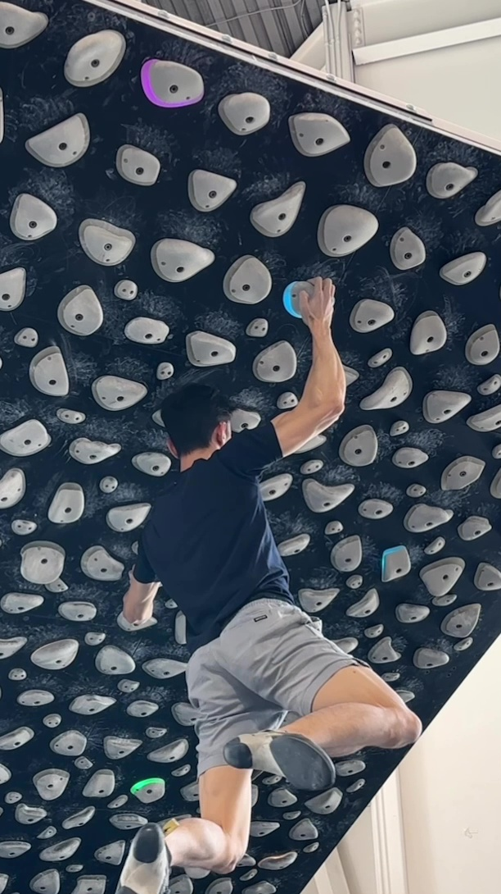
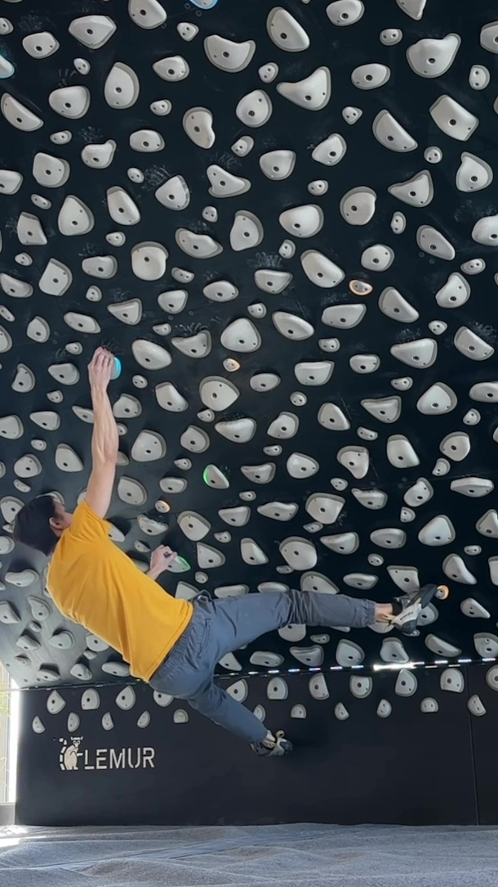

DEADPOINT
Timing a grab at the apex of upward momentum, momentarily reducing weight on the holds.


Standard deadpoint to a distant sloper
Static

Deadpoint with foot cut to generate upward momentum
DynamicTechnique Notes
The deadpoint is all about timing. You generate upward momentum—usually by a quick pull with the arms or a subtle hop of the body—and grab the target hold exactly when your body stops moving up and before it starts coming down.
Key Considerations: Focus on hip positioning. If your hips swing away during the movement, you'll barn-door off. Keep tension through your core. Often used on steep terrain where static reaches are impossible.
Common Mistake: Grabbing too early or late. If you grab early, you're still accelerating and might dynamically pop off the hold. If you grab late, you're already falling.